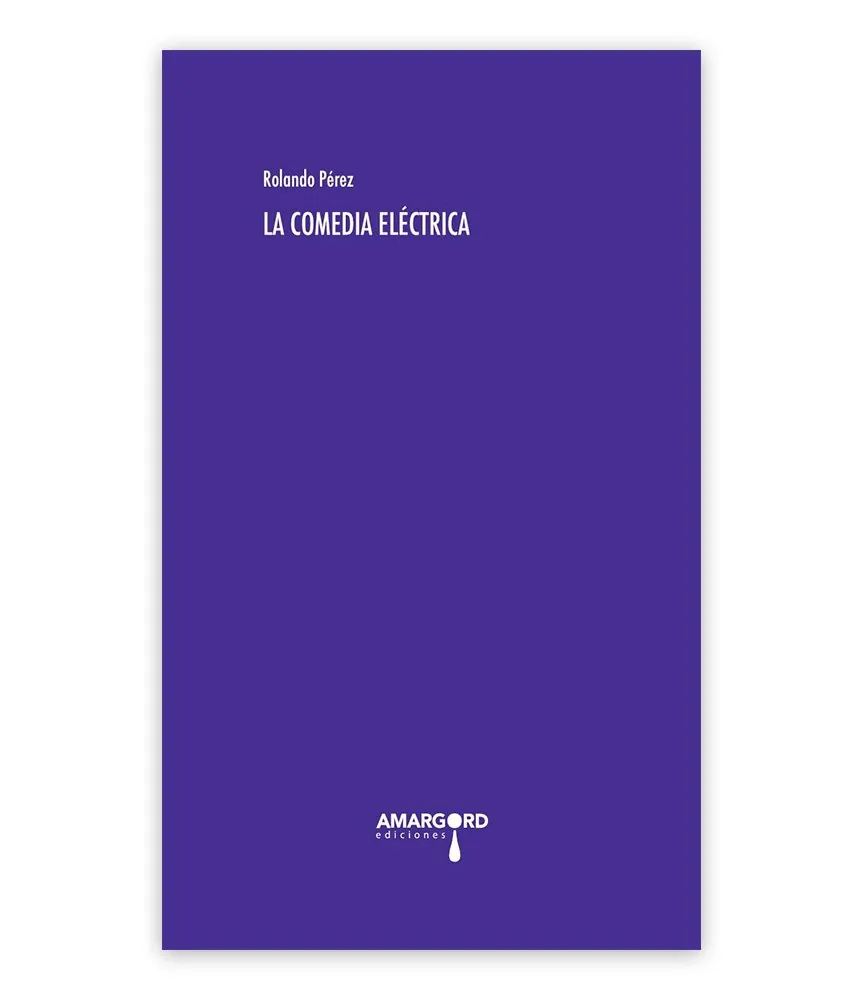
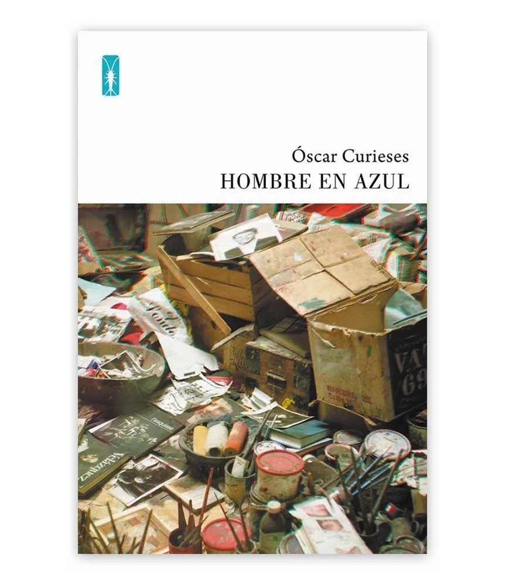
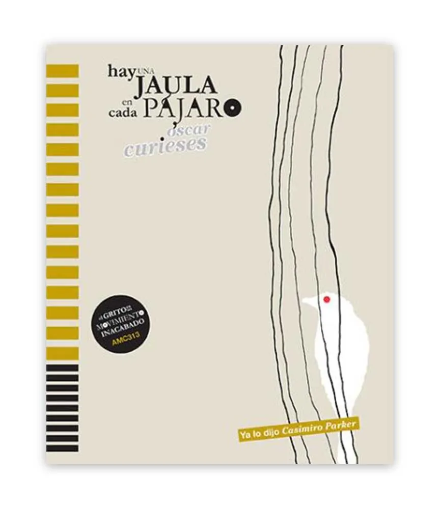
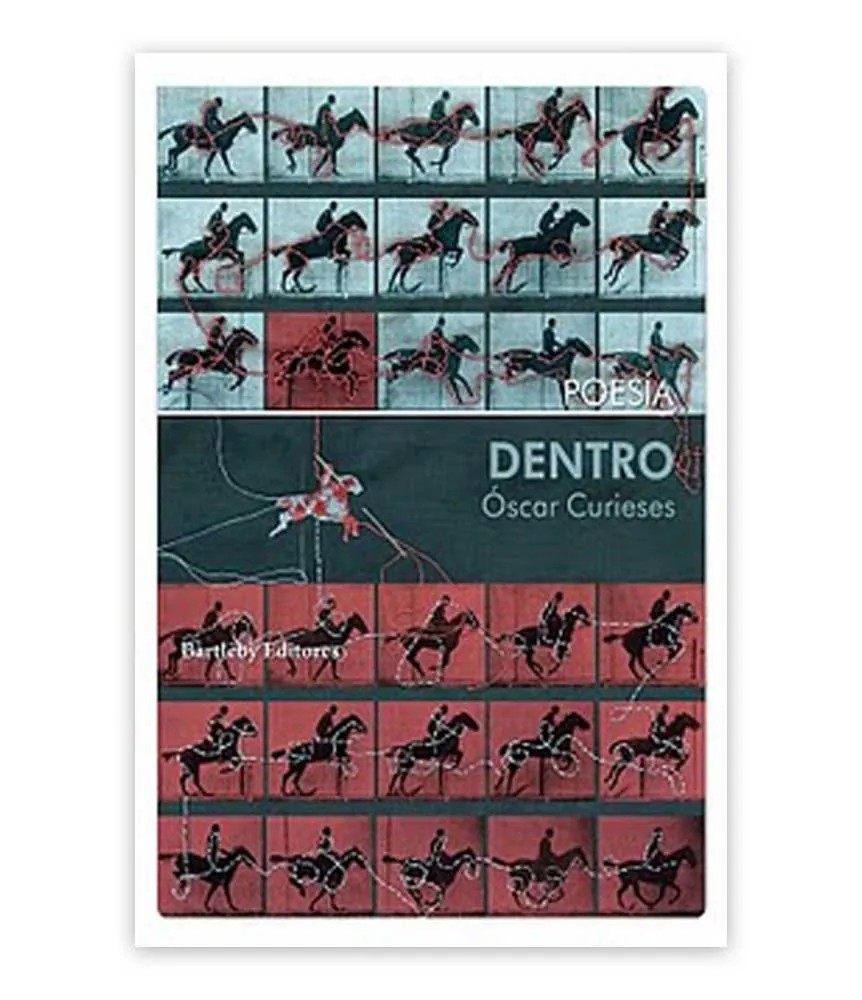
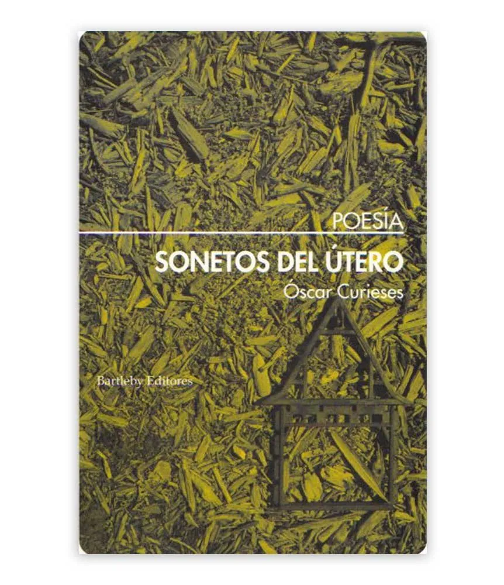

Libros
Poesía, narrativa, traducciones y ediciones
15 títulos

La poesía como arte insurgente
Lawrence Ferlinghetti · Traducción de Óscar Curieses
Reúne los textos aforísticos más lúcidos y combativos de Lawrence Ferlinghetti, una de las voces esenciales de la poesía y la cultura crítica del siglo XX: fragmentos autónomos que son, a la vez, los versículos de un gran poema sobre la poesía, la libertad y la sociedad contemporánea.

El operario y la sal
Un cuento chino
Un cuento chino en edición cartonera: un libro artesanal, iconoclasta y combativo en su justa medida. Los derechos de autor de este título se destinan a ayudar a Gaza.

Tengo la impresión de que el cielo se prepara para la lluvia
Con dibujos de El Roto y Rábago
El riesgo radical de dar forma narrativa a las urgencias de un futuro tan soñado como temido. Breves narraciones, poéticas y perturbadoras, situadas en Dirmad —anagrama de Madrid—, una ciudad estado que representa a muchas otras capitales del mundo, acompañadas por los dibujos de Andrés Rábago.

Los tiempos bárbaros
OPS · Edición al cuidado de Óscar Curieses
Último volumen de la obra completa de OPS, el alter ego más indómito de Andrés Rábago (El Roto). Reúne los dibujos que publicó en La Codorniz, Hermano Lobo o Cuadernos para el Diálogo en los últimos años del franquismo, cuyos originales estuvieron perdidos durante unos cuarenta años hasta que aparecieron en un desván.

Óvulos en la mano
Sharon Olds · Traducción y prólogo de Óscar Curieses
Antología de la poeta norteamericana Sharon Olds comentada por la propia autora, que reflexiona sobre algunos de sus poemas y sobre su escritura. Una puerta de entrada a una poética incisiva, subversiva y comprometida, en edición bilingüe.

Libro de los icebergs
«A lo largo de todos estos años, más de diez, el libro y mi percepción han cambiado, pero he sentido la necesidad de mantenerme fiel a aquel impulso que me transformó y a la forma que encontré para representarlo. Entonces y ahora, descubro en él un deseo de subvertir las cosas y las palabras, de inventar otro lenguaje, de construir otra mirada y otra escucha, y de ver qué sucede al hacerlo.»

En el cine de Auster
Prólogo de Manuel Gutiérrez Aragón
¿Por qué ver las películas de Paul Auster, qué hay en ellas y cómo las concibe? El único libro publicado sobre la totalidad de su filmografía, que se mueve entre su literatura y su cine, para Auster tan fundamental como sus libros.

OPS, El Roto, Rábago. Una microhistoria del mundo
Catálogo de la exposición comisariada por Óscar Curieses
La obra de Andrés Rábago a través de sus tres heterónimos —la mirada dadaísta de OPS, la crítica social de El Roto, la pintura de Rábago—, con una serie de microhistorias escritas por Óscar Curieses para cada uno de los temas recurrentes de la exposición.

Constitución Española
Intervención del texto de Óscar Curieses
¿Son vaciado y vacío una misma cosa? Una intervención sobre el texto constitucional, inspirada en parte por un poema de Hemingway de 1917 y por la política española de la última década, con ensayos de Dora García, Francisco Baena, Virginia Trueba Mira y Eduardo Gómez Cuadrado.

La célula de oro
Sharon Olds · Traducción y prólogo de Óscar Curieses
Quizá el más accesible de los libros de Sharon Olds publicados en España: la intensidad emocional de El padre y la variedad de escenarios de Los muertos y los vivos, con ironía y belleza, sin metáforas ni fantasía. Olds obtuvo el Premio Pulitzer de Poesía en 2013.

La comedia eléctrica
Rolando Pérez · Traducción y prólogo de Óscar Curieses
A partir de la Divina comedia de Dante, Rolando Pérez propone un viaje por la contemporaneidad —la simulación electrónica, el capitalismo digital, la realidad virtual—: una respuesta poética, filosófica y humorística a las condiciones infernales del neoliberalismo.

Hombre en azul
El diario personal del pintor Francis Bacon escrito por Óscar Curieses: una ficción que recorre su trayectoria y su pensamiento y que difumina, como en sus cuadros, los límites entre pintor y escritor. Se acompaña de unas gafas 3D.

Hay una jaula en cada pájaro
La experimentación verbal siempre debe ir ligada a la experiencia de la poesía. Esos dos mundos son sólo uno para Óscar Curieses, que los une para reconciliar la realidad y la vida.

Dentro
Segundo poemario de Óscar Curieses: un espacio previo a la vida, de posibilidades infinitas y amenazado a la vez por la ruina, la violencia y la muerte, donde las palabras funcionan como espejos. «Todo sucede dentro: de la carne, de la imaginación, de la palabra».

Sonetos del útero
El lenguaje como materia y el cuerpo como memoria y lenguaje: un libro de sonetos en el que la materia, como la poesía, es útero y abismo, lugar de metamorfosis donde se encuentran nacimiento y muerte, destrucción y creación.
No hay libros en esta categoría.